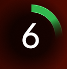
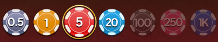
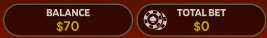
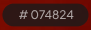
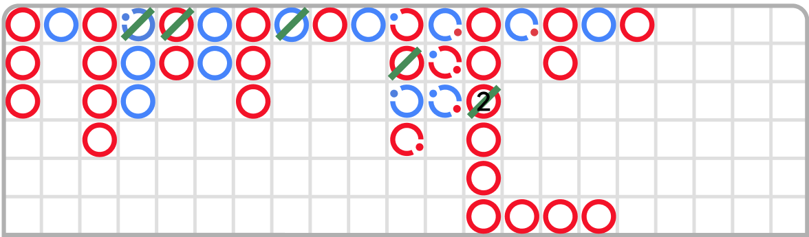
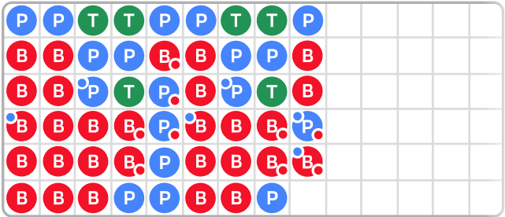

Baccarat é um clássico jogo de cassino amplamente conhecido e apreciado por jogadores ao redor do mundo. Ele atrai especialmente apostadores de alto limite e é muito popular nos mercados asiáticos. O jogo é reconhecido por sua mecânica simples e ritmo envolvente.
O objetivo é simples: prever qual lado — Jogador (Player) ou Banca (Banker) — terá a mão com total mais próximo de 9.
Para começar, escolha o valor da sua aposta e coloque suas fichas nos campos Jogador, Banca ou Empate. Você pode ajustar suas apostas enquanto o tempo de aposta estiver aberto.
Quando o tempo de aposta encerra, o Dealer distribui quatro cartas no total: a 1ª e 3ª cartas vão para o Jogador, enquanto a 2ª e 4ª cartas vão para o Banca. O Dealer escaneia as cartas começando pela mão do Jogador.
Se algum dos lados precisar de uma terceira carta, o Dealer a sacará conforme a Regra da Terceira Carta, explicada logo abaixo.
Quando todas as cartas necessárias forem distribuídas, a rodada é concluída. O lado com o total mais próximo de 9 vence. Se ambos os lados tiverem o mesmo total, a rodada termina em Empate.
As apostas vencedoras são destacadas, e os pagamentos são feitos de acordo com as apostas selecionadas. Seus ganhos também são exibidos na tela.
Quando a rodada termina, as cartas são removidas da mesa e uma nova fase de apostas começa.
O jogo utiliza oito baralhos padrão de 52 cartas. Apenas os números das cartas importam. Os naipes (copas, espadas, ouros e paus) não têm influência no resultado.
Valor das cartas:
| Card | Value |
|---|---|
| A(Ace) | 1 |
| 2-9 | Face value (e.g., 4 = 4) |
| 10, J, Q, K | 0 |
As mãos do Jogador e do Banca são calculadas somando os valores das cartas. O maior total possível é 9.
Se o total da mão ultrapassar 9, somente o último dígito é considerado.
Exemplo: 14 → 4
Exemplos:
- 6 + 4 = 10 → 0
- 3 + 9 = 12 → 2
- 2 + 2 + 7 = 11 → 1
- K + 5 = 5
- A + 8 = 9
- 7 + 7 = 14 → 4
Uma rodada termina imediatamente após as quatro primeiras cartas serem distribuídas, sem cartas adicionais, nos seguintes cenários:
- Se Jogador ou Banca tiver 8 ou 9 pontos (mão “Natural”).
- Se o Jogador tiver 6 e o Banca 7, ou vice-versa.
- Se ambas as mãos empatarem com 6, 7, 8 ou 9.
Se ambas as mãos tiverem entre 0 e 7 pontos, aplica-se a Regra da Terceira Carta para determinar se uma terceira carta será puxada. A mão do Jogador é sempre considerada primeiro.
Jogador — Ação para comprar carta:
| Total das 2 primeiras cartas: | Ação |
|---|---|
| 0,1,2,3,4,5 | Draw 3rd Card |
| 6,7 | Player Stands |
| Natural 8 ou 9 | Both Hands Stand |
Para que a mão da Banca compre (receba) uma carta:
| Total of Banker's first 2 cards | 3rd card drawn by the player: | ||||||||||
|---|---|---|---|---|---|---|---|---|---|---|---|
| No 3rd card | 0 | 1 | 2 | 3 | 4 | 5 | 6 | 7 | 8 | 9 | |
| 0 | D | D | D | D | D | D | D | D | D | D | D |
| 1 | D | D | D | D | D | D | D | D | D | D | D |
| 2 | D | D | D | D | D | D | D | D | D | D | D |
| 3 | D | D | D | D | D | D | D | D | D | S | D |
| 4 | D | S | S | D | D | D | D | D | D | S | S |
| 5 | D | S | S | S | S | D | D | D | D | S | S |
| 6 | S | S | S | S | S | S | S | D | D | S | S |
| 7 | S | S | S | S | S | S | S | S | S | S | S |
| 8 | S | S | S | S | S | S | S | S | S | S | S |
| 9 | S | S | S | S | S | S | S | S | S | S | S |
(D = Comprar; S = Parar)
Se as primeiras duas cartas do Jogador totalizam 6 ou 7 pontos e as primeiras duas cartas da Banca totalizam menos de 6, a Banca deve puxar uma carta adicional.
Abaixo está uma tabela contendo as posições de Aposta Principal, seus pagamentos e a condição de vitória.
| Aposta | Pagamento | Condição de Vitória |
|---|---|---|
| Jogador | 1:1 | Total do Jogador > Total do Banca |
| Banca | 0.95:1 | Total do Jogador < Total do Banca |
| Empate | 8:1 | Totais iguais |
Abaixo estão as apostas secundárias nas quais o jogador pode escolher apostar. Não é obrigatório fazer uma aposta principal. Os jogadores podem apostar em qualquer uma ou em todas as apostas secundárias.
- Par do Jogador
- Par da Banca
- Qualquer Par
- Par Perfeito
- Bônus do Jogador
- Bônus da Banca
Apostas secundárias de par
| Aposta | Pagamento | Condição |
|---|---|---|
| Par do Jogador | 11:1 | As 2 primeiras cartas do Jogador formam um par |
| Par do Banca | 11:1 | As 2 primeiras cartas do Banca formam um par |
| Par de Qualquer | 5:1 | Par nas 2 primeiras cartas de qualquer |
| Par Perfeito | 25:1 | Par perfeito em qualquer lado |
Tipos de Par:
- Par Perfeito: cartas idênticas (ex.: dois Reis de Copas)
- Par Colorido: mesmo valor e mesma cor, naipes diferentes
- Par Misto: mesmo valor, cores diferentes
Nota importante: Após 60 rodadas, as apostas de Par são desativadas como proteção contra contagem de cartas.
Apostas Laterais de Bônus Jogador/Banca
O Bônus Jogador (Player Bonus) ou Bônus Banca (Banker Bonus) é ganho com uma vitória natural ou uma vitória não-natural de pelo menos 4 pontos.
Abaixo estão os pagamentos para cada resultado:
| Resultado | Pagamento |
|---|---|
| Vitória não natural por 9 | 30:1 |
| Vitória não natural por 8 | 10:1 |
| Vitória não natural por 7 | 6:1 |
| Vitória não natural por 6 | 4:1 |
| Vitória não natural por 5 | 2:1 |
| Vitória não natural por 4 | 1:1 |
| Vitória Natural | 1:1 |
| Empate Natural | PUSH (retorna a aposta) |
Nota: Após 44 rodadas, Player Bonus e Banker Bonus são desativados.
Nome da Mesa: mostra a mesa atual e seus limites.
Janela de Pagamentos e Limites: exibe todos os limites e odds.

Timer: mostra o tempo restante para apostar.
Bandeja de Fichas: exibe as fichas disponíveis dentro do seu saldo.
Reaposta (Re-bet): repete sua aposta anterior.
Dobrar (Double): dobra todas as apostas, se saldo permitir.
Desfazer (Undo): desfaz ações anteriores.
Saldo e Aposta Total: exibidos na tela.
ID da Partida: usado para consultas.
Horário Atual: sincronizado com o servidor.
RTP Teórico Ótimo: 98,94% na aposta Banca.
| Aposta | Return to Player |
|---|---|
| Jogador | 98.76 % |
| Banca | 98.94 % |
| Empate | 85.64% |
RTP Teórico para Apostas Paralelas (Side Bets):
| Aposta | Return to Player |
|---|---|
| Par do Jogador | 89.64% |
| Par do Banca | 89.64% |
| Par de Qualquer | 86.29% |
| Par Perfeito | 86.97% |
| Player Bonus | 97.35% |
| Banker Bonus | 90.63% |
Roadmaps registram tendências e resultados anteriores para ajudar jogadores a visualizar padrões no baralho. Os registros começam no início do baralho e continuam até a carta de corte ser revelada.
Tipos:
- Big Road
- Big Eye Boy
- Small Road
- Cockroach Road
- Bead Plate
Big Road
O Big Road é o roadmap principal, a partir do qual todos os outros roadmaps derivados são baseados.
O Big Road começa com o primeiro resultado de um baralho (shoe), colocado no canto superior esquerdo. Resultados subsequentes do mesmo lado são registrados diretamente abaixo, enquanto o lado oposto inicia uma nova coluna. Isso cria colunas de círculos vazios ao longo do baralho, com círculos azuis representando vitórias do Jogador e círculos vermelhos indicando vitórias do Banqueiro.
No Big Road, um Empate é indicado por uma linha verde traçada sobre o último resultado. Em casos de múltiplos empates consecutivos, um pequeno número aparece na linha verde, mostrando o total de empates. Se um Empate ocorrer antes de qualquer resultado do Banqueiro ou do Jogador, a linha verde de Empate será exibida na célula superior esquerda da grade. Assim que o primeiro resultado do Banqueiro ou do Jogador for registrado, seu círculo aparecerá na mesma célula, abaixo da linha de Empate.
Quando há mais de seis vitórias consecutivas para o Banqueiro ou para o Jogador, essa sequência é chamada de “dragão”. Uma estratégia comum no Baccarat é “seguir o dragão”, ou seja, apostar repetidamente no mesmo lado até que ele mude.
Roadmaps Derivados
O Big Eye Boy, Small Road e Cockroach Road são todos derivados do Big Road e mostram diferentes padrões dentro dele. Esses “roadmaps preditivos” indicam se existem padrões a serem observados.
Cada roadmap derivado usa símbolos específicos: círculos vazios para o Big Eye Boy, círculos sólidos para o Small Road e barras (slashes) para o Cockroach Road. Símbolos vermelhos indicam previsibilidade, enquanto símbolos azuis sugerem “caos” ou ausência de padrão discernível. É importante notar que essas cores não representam os resultados do Banqueiro ou do Jogador.

Os roadmaps derivados não começam no início do baralho. Em vez disso, eles começam com a mão imediatamente após a primeira mão em colunas específicas do Big Road:
- Big Eye Boy: começa com o segundo resultado na segunda coluna.
- Small Road: começa com o segundo resultado na terceira coluna.
- Cockroach Road: começa com o segundo resultado na quarta coluna.
Uma vez iniciado, um novo símbolo vermelho ou azul é adicionado a cada mão subsequente. Os usuários podem clicar ou tocar em qualquer roadmap derivado para ver seu conteúdo em mais detalhes.
O Bead Plate registra cada mão do baralho de forma simples. Círculos verdes em células separadas indicam empates.
Os resultados são exibidos a partir do canto superior esquerdo da grade, preenchendo verticalmente cada uma das seis células de uma coluna. Uma nova coluna começa assim que a anterior estiver completa, independentemente do resultado das mãos.
O Probing do Roadmap ajuda os jogadores a prever o resultado da próxima rodada. Ele mostra as tendências no Big Road, Big Eye Boy, Small Road, Cockroach Road e Bead Plate caso o próximo resultado seja do Jogador ou do Banqueiro.
Clique ou toque nos botões Player Predict ou Banker Predict para visualizar as tendências caso a próxima vitória seja do Jogador ou do Banqueiro, respectivamente.
Os símbolos nos botões representam como seriam os registros nos roadmaps derivados se o Jogador ou o Banqueiro vencer.
Embaralhamento:
- Momento: O embaralhamento ocorre imediatamente após o término de uma rodada e a remoção da carta de corte do baralho.
- Método: As cartas são embaralhadas por um embaralhador dedicado em uma mesa de embaralhar ou pelo Dealer na mesa de jogo, seguindo os procedimentos estabelecidos.
Carta de Corte e Última Mão:
- Quando a carta de corte aparece durante o jogo, ela é removida.
- O Dealer anuncia que a mão atual é a última do baralho (shoe).
- Após essa última mão, nenhuma carta é distribuída até que seja realizada uma troca de baralho ou um novo embaralhamento.
Se ocorrer qualquer erro durante uma partida de Baccarat — relacionado ao jogo, ao sistema, aos procedimentos ou a transações — a rodada será temporariamente pausada.
O Shift Manager será imediatamente notificado, e todos os jogadores receberão uma notificação na tela informando que o problema está sendo investigado.
Se o erro puder ser resolvido rapidamente, o jogo continuará normalmente. Caso a resolução imediata não seja possível, a rodada será cancelada e todas as apostas iniciais serão reembolsadas aos jogadores participantes.
Para quaisquer dúvidas relacionadas ao jogo, entre em contato com o Suporte ao Vivo e forneça seu número de ID da partida.
Durante o jogo online, desconexões podem ocorrer ocasionalmente.
Caso isso aconteça, você pode consultar seus ganhos no Histórico de Jogos.
Para dúvidas sobre resultados de jogo, entre em contato diretamente com o Suporte ao Vivo ou com o Suporte ao Cliente do cassino, fornecendo seu número de ID da partida.